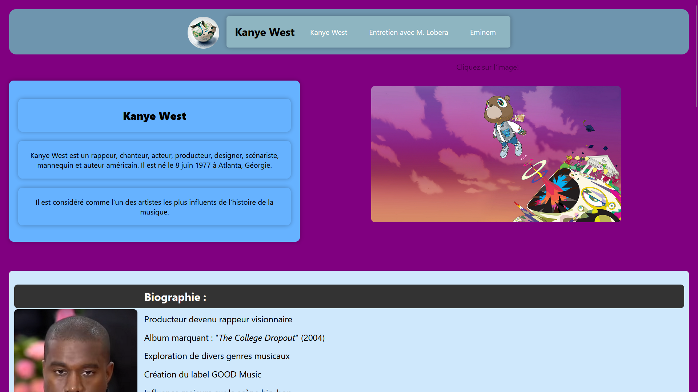

Welcome to a tour of my first website project! This was my initial dive into web development, where I explored HTML, CSS, and JavaScript. Let me guide you through what I built, the hurdles I encountered, and how I overcame them.
The Structure: HTML
I began with the HTML structure. The website was designed to showcase Kanye West’s life and career, featuring a header, navigation, and several content sections. Here’s what I included:
- Navigation: A clean, centered layout with links to key sections.
- Main Content: Multiple articles—biography, awards, collaborations, and activism.
- Interactivity: A standout feature was an interactive image that played music when clicked—my first taste of JavaScript.
Styling with CSS
My goal was to make the site visually appealing with a modern, colorful design. Some key styling decisions included:
- Color Scheme: Use of unique pastel shades to differentiate articles.
- Typography: Choosing sleek, readable fonts like Segoe UI.
- Animations: Implementing flashing text prompts and scale effects on hover.
Interactivity with JavaScript
The logic allowed the site to feel "alive". The main feature was tied to an album image:
- Audio Toggle: Clicking the image played/paused a track.
- DOM Updates: Disappearing prompts and swapping images based on playback state.
Challenges and Solutions
Building this site came with its share of obstacles. Here’s how I tackled them:
Image Overflow
Early on, images stretched beyond their containers. I solved this by adding max-width and height properties in CSS.
Audio Control
I struggled to stop the audio cleanly. Using audio.paused and audio.currentTime = 0 ensured a proper reset.
Conclusion
This project was my gateway to web development. It taught me how HTML structures, CSS styles, and JavaScript breathes life into a page. I’m proud of the result, and it’s fueled my excitement to keep learning.